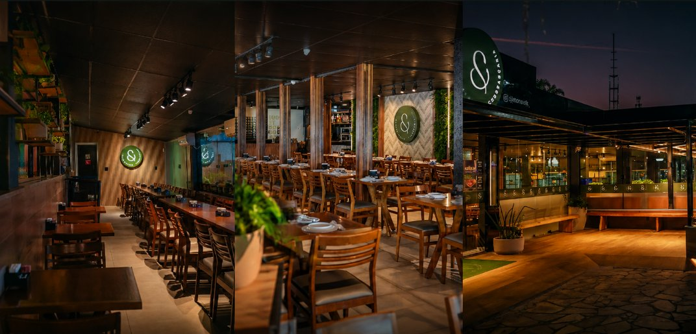

Rodízio de churrasco
Descrição a fornecer — cortes e formato do serviço ainda não confirmados.
Av. Vinte e Dois de Maio, 3428 · Itaboraí – RJ
Churrasco · Pizza · Vinhos
Rodízio de churrasco e pizza em Outeiro das Pedras, Itaboraí.
Brum & Mello
Churrasco e pizza servidos à mesa, no mesmo endereço desde 2013.
A casa
Desde 2013 oferecendo o melhor rodízio para você e sua família. Rodízio de churrasco e pizza em Outeiro das Pedras.
História completa — a fornecer2013Ano de abertura
47,2 mil seguem no Instagram
O que se vive aqui
Descrição a fornecer — cortes e formato do serviço ainda não confirmados.
Descrição a fornecer — sabores e formato ainda não confirmados.
Descrição a fornecer — rótulos e seleção ainda não confirmados.
Descrição a fornecer — condições para grupos e datas ainda não confirmadas.
Galeria
Desde 2013, reunindo você e sua família à mesa em Itaboraí.
Cardápio
A estrutura está pronta. Os itens entram quando o cardápio definitivo for enviado.
Em movimento

Onde estamos
Av. Vinte e Dois de Maio, 3428Horário de funcionamento — a confirmar